A new look for the Russian-Speaking School of Austin
By Maxim Rebguns with the gracious assistance of Sergey Yudin (see "acknowledgements")
Copyright Maxim Rebguns 2024. Written June 2024
Click for info regarding the war in Ukraine
Disclaimer: The Russian-Speaking School of Austin is a diverse community of Russian-speaking
Austinites from all over the world. The school is not affiliated with the Russian Federation,
nor does it support Russia's invasion of Ukraine. It is a cultural center which aims to teach
child and adult students useful schools such as Russian language, theater, and in my case, architecture.
If you live in Austin and are interested, you can find the info on
the school's official website.
The Russian-Speaking School of Austin
is currently renting facilities at the
Northwest Hills United Methodist Church.
Ideally, the school would have its own location to function. This presents less
friction and scheduling conflicts, as well as allowing the school to have full control
over its educational facilities. It is a Sunday school that offers a lot of different
subjects, so that presents additional difficulties. A possible approach would be owining
the building, while renting it out: the school happens on Sundays, and leases its facilities
out to other organizations over the course of the week.
Our idea at the Russian-Speaking School of Austin architecture class was to create a
design that could accomplish this goal. This page showcases every step
that I took over the course of three years to bring this project to fruition.
We went all the way from paper to a suitable 3D model. While this design is
far from official, it could serve as the starting point for a development
project in the future.
Requirements
The new school building would have to follow a number of important criteria.
These arise primarily due to the unique nature of the Russian school: it is a Sunday
school with a very small class size and diverse set of activities, requiring
multifunctional facilities for student and faculty use. For any minimal project,
the following requirements would have to be met:
12 general-purpose classrooms
A theater with a stage and seating
A multifunctional facility that could function as a sports center
Common areas which could function as gathering points for school activities
Main facilities are completely wheelchair accessible
Greenery and good use of light in the hot Texas environment
The end result must be sufficiently small, yet extremely versatile. The
focus on multimodality would fully accommodate all the classes
that happen on campus from theater arts to karate.
Idea sketches
I started by sketching the school from different angles. Sergey (my mentor) and I went through a
ton of different ideas. There were all sorts of designs that had their own advantages
and flaws. It all starts with a scribble on the paper, which functions as the seed
from which a project can be grown. These sketches are the brainstorming process that allows
for new ideas to come to mind.
(This is a placeholder. Unfortunately I haven't got around to scanning them yet.)
Eventually, we settled on a two-story design with a central courtyard. This allows
students to walk easily between classes and be able to rest in the courtyard. The
courtyard serves as a focal point for school-wide events. Additional facilities
are placed outside this core part of the school.
Initial drafts
With the basic idea in place, I proceeded to draft floor plans and elevations. The
school building itself is simplistic and functional. Large square windows provide
natural light into every classroom. The courtyard is lit from a glass roof in the
top.
(This is a placeholder. Unfortunately I haven't got around to scanning them yet.)
Mockup
We proceeded to make an initial concrete version design using cardboard. This is
a highly effective way to visualize the design without using CAD software. The
approach allows for the model to be viewed and touched, something that digital
images don't provide. This step is important especially when showcasing the
design to others, since laymen are not always comfortable with reading 2D architectural
drawings.
A cardboard model is a good way to showcase a project in a cheap and aesthetically pleasing manner.
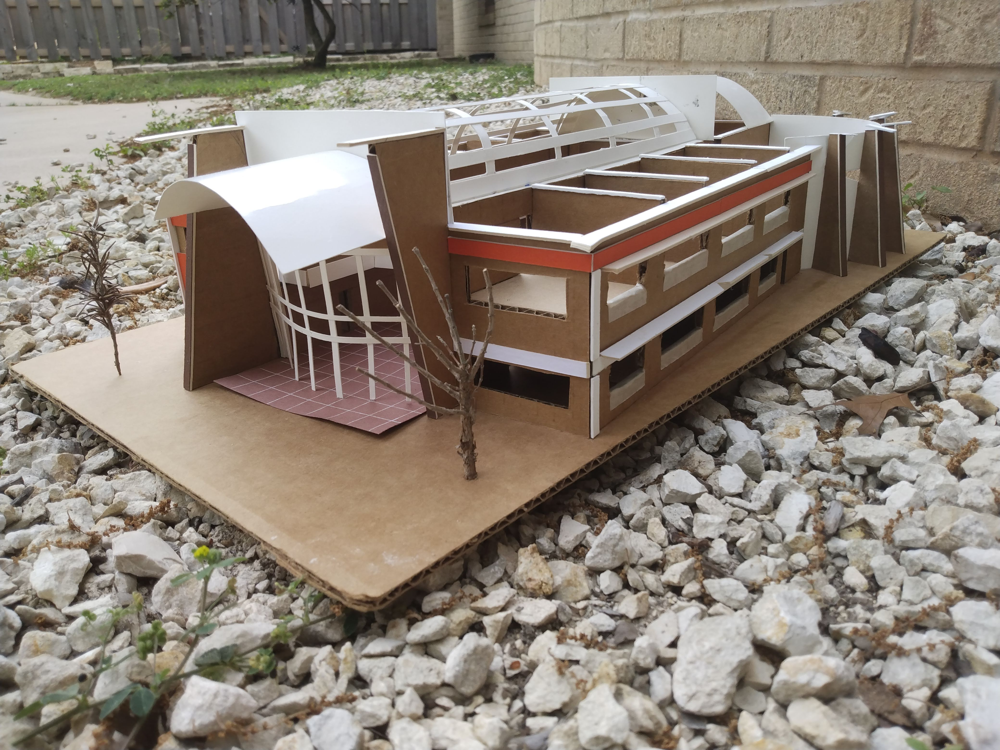
The front entrance of the school is attached to a foyer area that is large and spans
two stories. The rounded entrance is made of glass panels, which allows for a connection
to the outside world. In Texas, these windows are usually coated in a material that
provides shade to occupants within the building. A similar method could be used in this
case. The entrance is surrounded by two opposing trapezoidal forms that break the
symmetry that the rest of the building exhibits.
An interesting part of the process was photographing in different locations and playing
around with natural objects to enhance the realism of the model. Sergey found some
twigs on the ground that we attached to the model. They look like little trees and
help the viewer imagine the model's scale. Most photographs were taken at the
Northwest Hills United Methodist Church and Murchison Middle School in Austin, Texas.
I played around quite a bit with scrap pieces of cardboard. The colorful features break what would otherwise be a dull, institutional environment.
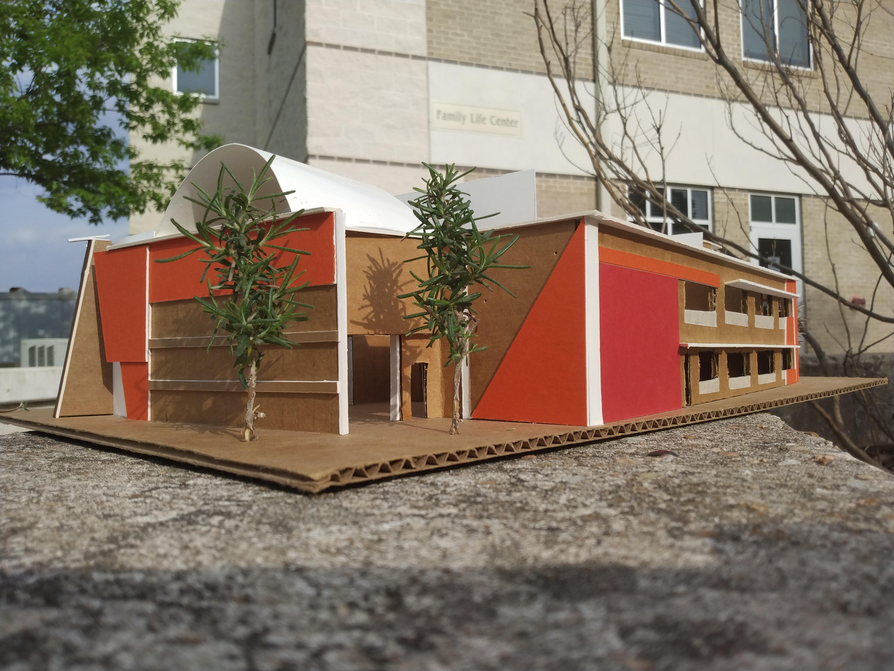
I decided to adorn the building with bright red geometric elements. While the classrooms
themselves are meant to be standard and symmetric, this institutional feel is broken
by the exterior adornments. These triangles, rectangles, and trapezoids make the building
stand out in its natural environment. I am very satisfied with how the exterior design
of the mockup turned out.
The curved roof is a key component that utilizes natural lighting. The roof continues from one end to another uninterrupted.
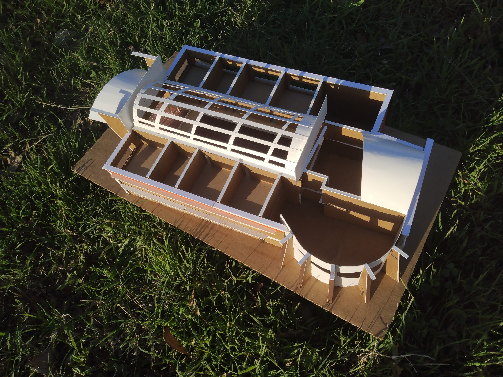
A big part of the design is the roof that covers the courtyard at the heart of the school. I
experimented with different roof shapes, including sloped, covered, and triangular. In the end,
for the mockup we used a arched glass roof which is extended in the front by a solid shade roof.
At the back of the building is the theater, whose roof is also a continuation of the arc shape.
The round room is the library, while the angled room across from the library is the gym. I decided that
while the classrooms can be standardized, I can afford to make the school's other multifunctional spaces different.
Additionally, the classrooms occupy only one story each, while the multifunctional areas occupy both
stories.
Through clever craftsmanship, the roof slides cleanly on and off the main building.
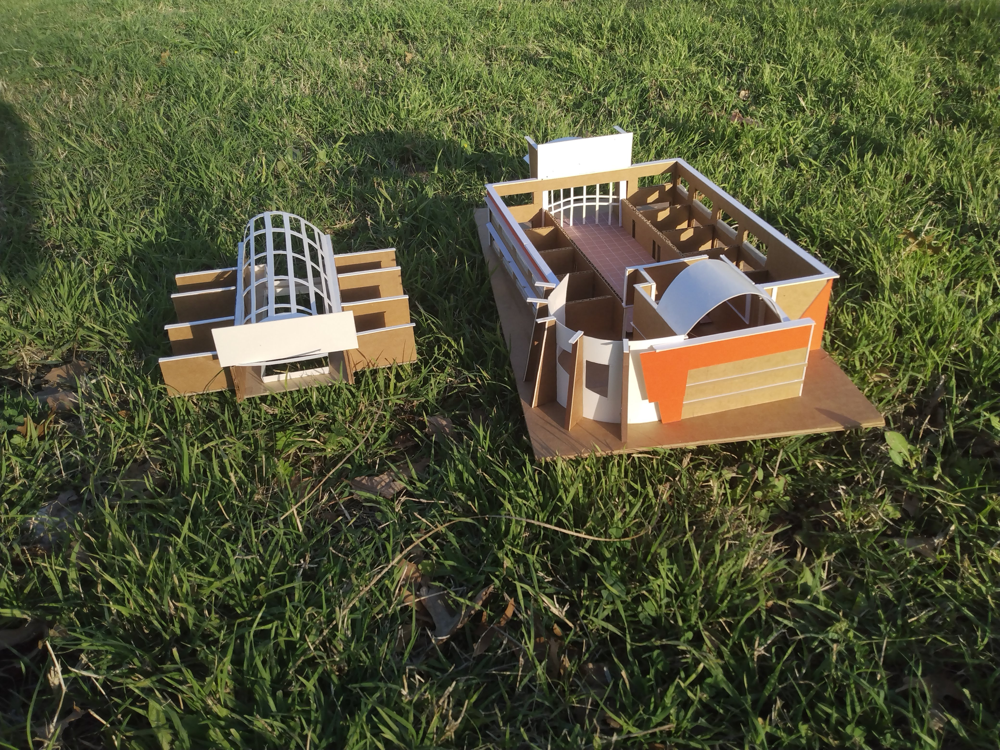
I carefully made the model so that the second story isn't actually attached to the first. This allows
it to be removed so that one can peer in and see the bottom story and courtyard floor. During the process
I accidentally glued them together a couple times and needed to remove them with a utility knife. I am thankful
that Sergey is patient and walked me, a rookie, through the process of cardboard modeling.
Creating structures from cardboard is actually a really awesome experience. All you need is cardboard/paper,
a utility (X-Acto) knife, and liquid school glue (yes, really, Elmer's school glue will do!). The process is
simple, but requires patience. First, you squirt a tiny amount of glue onto your finger. Next, you rub your
finger smoothly along the surface that needs to be glued. Afterward, you quickly attach the two surfaces that
need to be glued and hold them together for 30 seconds to a minute. You can then let go: the glue will magically
harden and become invisible over time.
As for the cardboard itself, I cut it all using a utility knife over a cutting mat. The key for cutting cardboard
is to run the knife over the cut multiple times, cutting through a layer each time. This is time-consuming work
that is tempting to rush. As I learned, rushing produces poor, jagged cuts, which do not look good on such a small
and intricate model.
As is the case with most crafts: think before you act. Measure twice, cut once.Or, as the Russian saying goes, measure seven times, cut off once (семь раз отмерь, один отрежь)
I could have saved myself a nasty utility knife cut if I were more careful and patient.
The modern concrete church building provides an interesting backdrop for the school model.
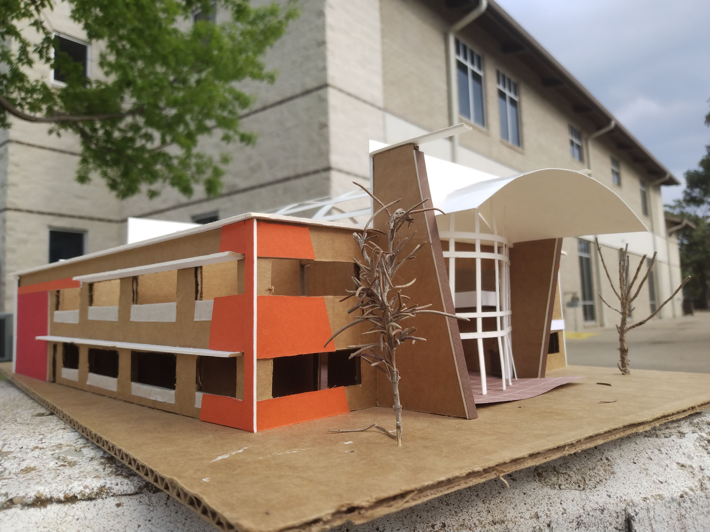
An exciting step after I created the cardboard model was photographing it. Sergey and I took it to many places
around the church and nearby school. We took shots from different angles, at different distances, and with different
backdrops. The camera itself is a powerful tools to create optical illusions and interesting compositions. I also
played around in GIMP to paste the school into photos I have taken. They don't look
photorealistic, but are detailed enough that they provide a good overview about my vision as an architect.
I utilized a photo of the church's parking lot and used GIMP to insert a photo of the model into it.
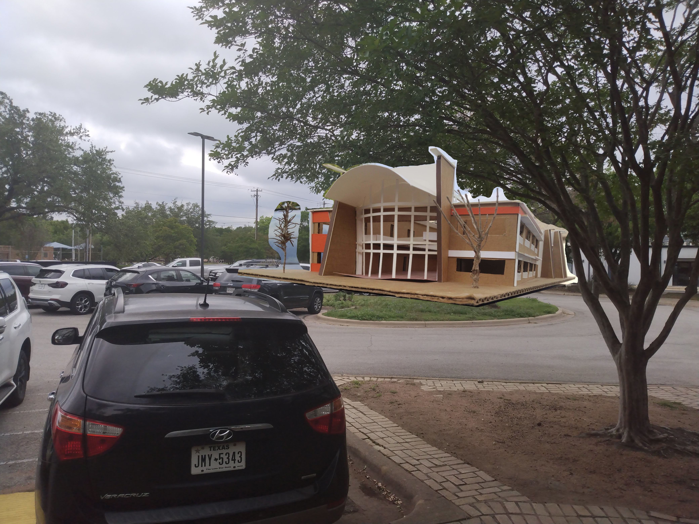
An important part of the process was making sure that the perspective of the model photo matches the perspective of the backdrop.
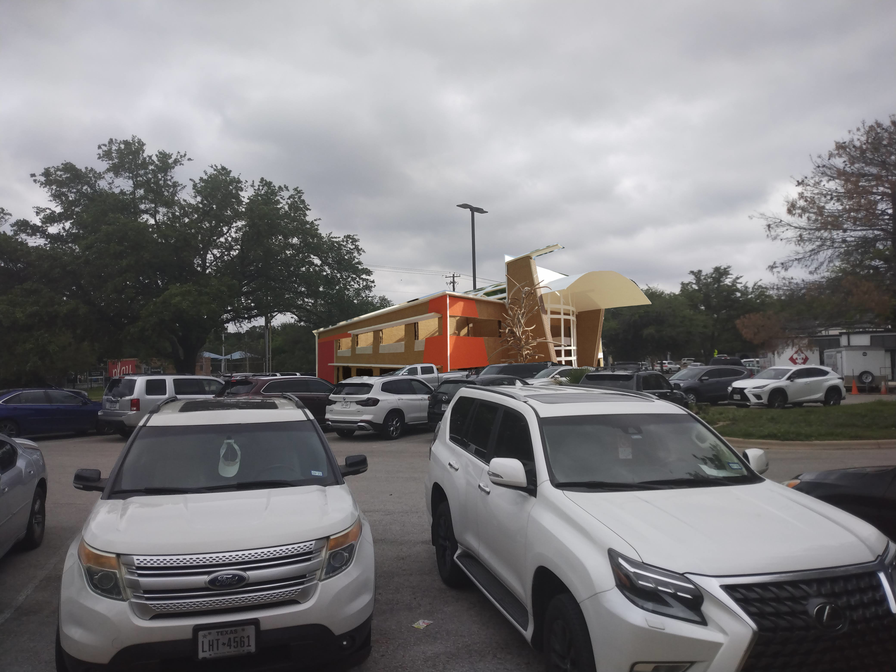
Some variants turned out better than the others, but I am proud with how they look overall.
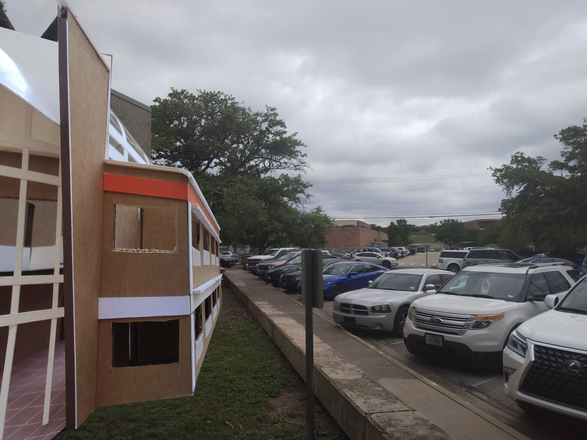
After countless hours on the model, it turned way better than I had ever anticipated. Upon
close inspection you can see the wiggly cuts, uneven shapes, and imperfect gluing. However,
the model meets all the requirements and accurately portrays my vision.
When I talk about myself doing things, the whole time I have a teacher there at my side willing to help.
After getting a doctorate in architecture in Moscow, Sergey worked as a professor in Mexico,
teaching first year architecture students like myself how to make similar structures. Craftsmanship
is something that may be overlooked in the age of AutoCAD and Revit, but it is an important step
in any architect's journey. I am grateful to have been mentored by a knowledgeable architect
like Sergey.
3D model
The final stage of my process involved a lot of experimentation. A digital representation of a building
is a key feature of any modern architectural project. Unfortunately, what you can and can't do in this
stage heavily depends on what software you have available. Architectural design software is highly complex:
it has to be simple enough to not be a burden, yet also allow for extremely flexible and unique designs.
This step in my journey was full of ups and downs, and unlike in previous steps, I had to rely a lot on online
forums and trial and error to get things accomplished.
The first program that I attempted to use was FreeCAD. FreeCAD is one
of the most complex and feature-rich multipurpose CAD (Computer Aided Design) solutions available as
free/libre software. It comes at no cost and
development is done by volunteers. This makes very versatile and community-driven. I have used FreeCAD before
to make small 3D-printable models and it did the job, but I had never tried its architectural features.
Architectural plans in the 21st century are developed using BIM (Building Information Modeling) software. A BIM
program is a tool that architects and drafters use to create a digital representation of a real-life
site, such as the school that I am making. FreeCAD comes with a separate BIM workbench which has tools
such as walls, doors, and windows. However, what counts as a "wall" or "window" to the program is irrelevant –
it only knows when I mark objects as such.
This allows me to create custom wall shapes using FreeCAD's modeling tools and then mark them by their
type accordingly. This grants me a great deal of flexibility when designing a pretty intricate building like
the school.
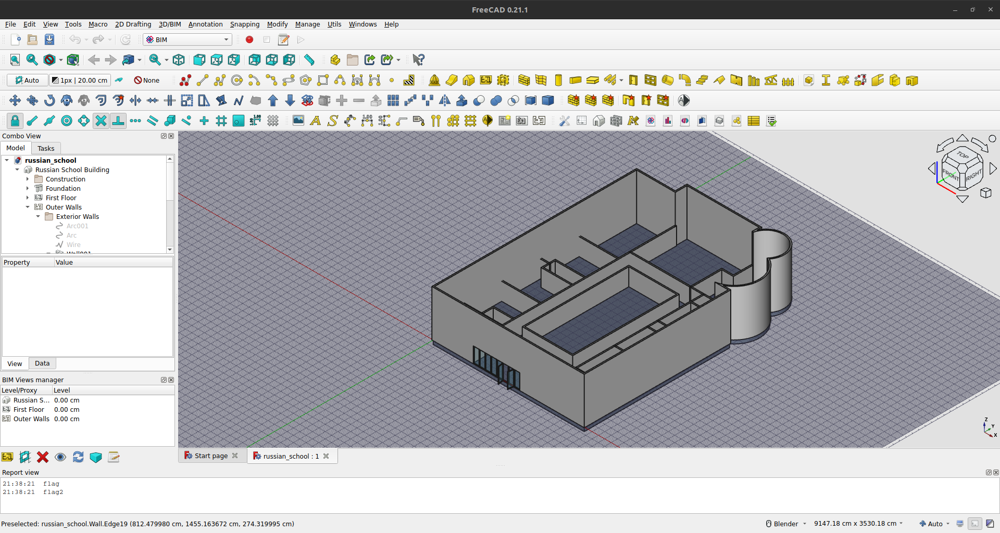
Unfortunately, what you see in the image is as far as I got before giving up on FreeCAD. As a firm believer
in the importance of free software,Free as in freedom, rather than cost. This article explains the distinction well.
I tried really hard to model the building despite FreeCAD's quirks. I ran into a number of issues
when trying to make the building. In particular, every step felt tedious and it was as if I was fighting
the program to get things done. I came across issues with ensuring proper distances between various components,
since moving and properly positioning things is difficult. Additionally, the lack of features such as proper mirroring
(the windows are basically the same on both sides of the building) made the process slower than it needed to be.
That being said, I am extremely grateful for the FreeCAD team for constantly pushing out improvements.
I understand that this is free software, and that I have absolutely no right to complain. I am just pointing
out some issues that made it difficult for me to use FreeCAD for this type of project. Still, I am amazed
by the amount of features that have already been implemented. I highly recommend checking out FreeCAD developer
Yorik van Havre's blog in order to understand his motivations
and processes behind developing the BIM workbench.
With the first model abandoned, I searched for another program that would be capable of getting things
done. To my surprise, another libre program exists that solved many of my needs:
Sweet Home 3D. This application is mainly aimed at interior
design for people looking to solidify their vision for a dream home. I knew right from the onset that
it wasn't designed with the technical architect in mind, but figured that I might as well try.
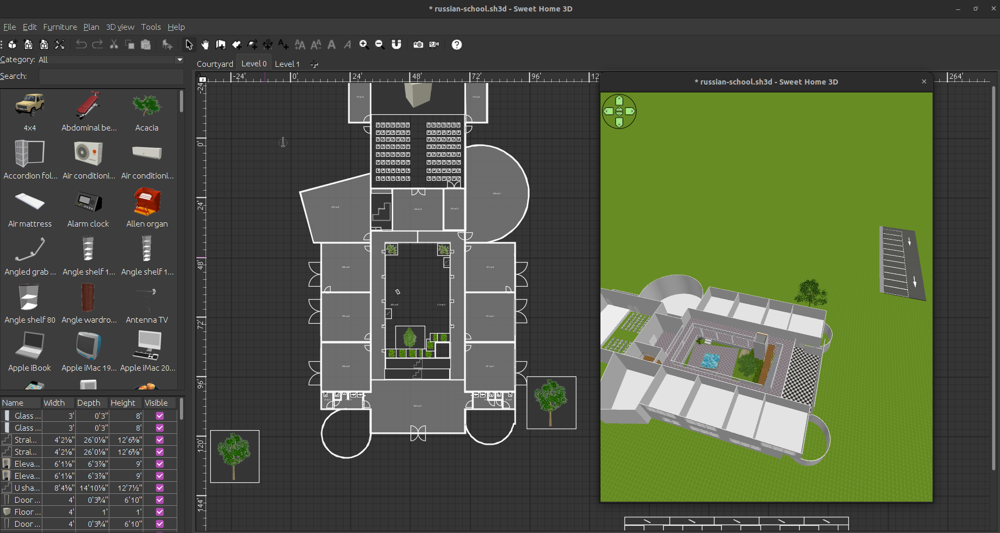
I was very surprised by the versatility of Sweet Home 3D. The simplicity of the interface allowed me to
get things done very quickly. I especially loved the distance guiding feature when inserting objects, allowing
me to precisely place things in a fast manner. Despite the program not being made for my use case, I got most
of my vision transferred onto the canvas. Unfortunately, the program doesn't have the concept of architectural
elements like columns. While one can import any 3D model, the lack of parametrization features essentially
means that the 3D model must be custom-made for the building at hand. This, combined with the lack of features
like an easy way to create roofs, limits this program to hobbyist use cases. Once again, I greatly appreciate
the work that the community has put in to make this piece of software possible.
I would have wrapped the project up here had I not learned from fellow architecture guru Nelly Bogner that Autodesk
provides its whole software catalog for free to students (ranging from primary school to university). Going to the
Autodesk education gateway
an uploading a copy of my transcript gave me access to the whole suite of Autodesk programs, including AutoCAD
and Revit, two industry standard programs for architectural drafting.
Given that Revit has gained significant traction in the architecture world, I decided to use the program to model
the school once again. Luckily, I had a whole week of spring break to figure out how to use the program. To my
surprise, I ran into little friction and managed to get most of the work done over that week. Being a more mature
proprietary program, Revit has a lot of features that make building things easier. While it isn't perfect, I was
able to get almost everything that I envisioned for the school into the model.
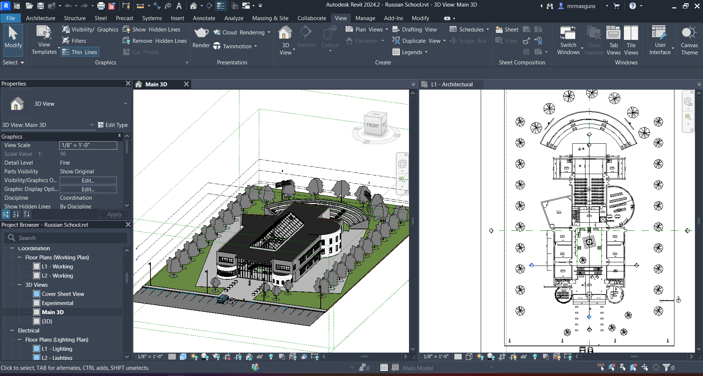
To me, Revit was easy to learn. I mostly relied on the official documentation when looking for help. There
are a series of short official tutorial videos that I found helpful when starting out. While the building is extremely detailed,
it is by no means a final draft from which something can be built. I didn't model the electrical elements, pipes,
and other necessary features required by building code. These elements rely on engineering knowledge and building
codes, things that were not of interest to me for this project.
Final results: an exploration of architectural choices
As you may have noticed, with every iteration I made changes to the school's design. Switching to a new medium
allowed for Sergey and I to tweak things and add new details. The model in Revit is by far the most fully-featured.
I spent all spring 2024 adjusting the model and working things out.
Architectural drawing of the school's first (ground) level.
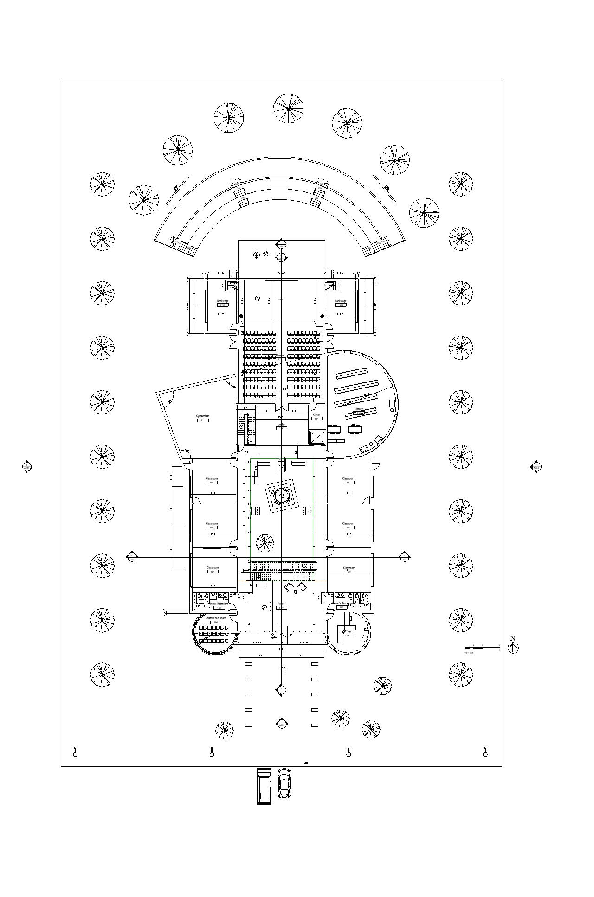
Throughout my iterations, the courtyard-centered design remained mostly unchanged. There are still
twelve main classrooms, with 6 on each level. The entrance is flanked by two rooms: the conference room
on the left and office on the right. In this iteration they are round and symmetrical. My main idea of
having the core educational facility be standard, while other rooms are more "out-of-the-box" in terms
of shape and exterior features, remained consistent in this design.
The school's second level is much like the first. Notice that large, multifunctional rooms like the library, theater, and gym, have ceilings aligned with the second floor ceilings.
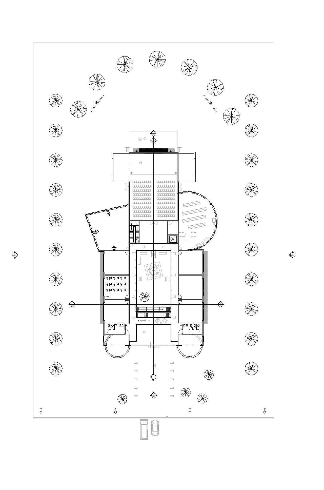
The courtyard transitions smoothly into a lobby that enters the theater. The lobby was introduced in the Revit
design to provide yet another space for people to gather for various events. The gym on the west side of the building
is nonstandard. Normally, this would present an issue for a public school which has a "professional" team. However,
because this is a Sunday school, the main function for the gym is unstructured athletic activity. The round room on the
east side opposite the gym is the library. Just like the gym, it extends two stories in height. Notice how the
shelves continue the angle set up by the gym wall.
The Revit model of the school is heavily influenced
by deconstructivism. Notice the angle at which the
gym's north wall is at. If you were to draw an imaginary line from the gym, you'd be tangent to the circular wall
of the library. I decided to play around with breaking the standard parallel-perpendicular construction by including
an additional axis to which parts of the building are aligned. Notice also the fountain in the courtyard and the
concrete foundation slab which the building stands on – they form a part of this deconstructivist reality.
A big change that I made in the latest design is the introduction of an outdoor amphitheater, extending
the inner stage with a complementary outdoor stage. On sunny days, the outdoor stage can be used for
large-scale community events. In the case of rain, things can be moved quickly to the corresponding indoor
stage through the large central folding door. To the left and right of the stage are areas for performers
and props. There is also a storage area adjacent to the southeast end of the indoor theater.
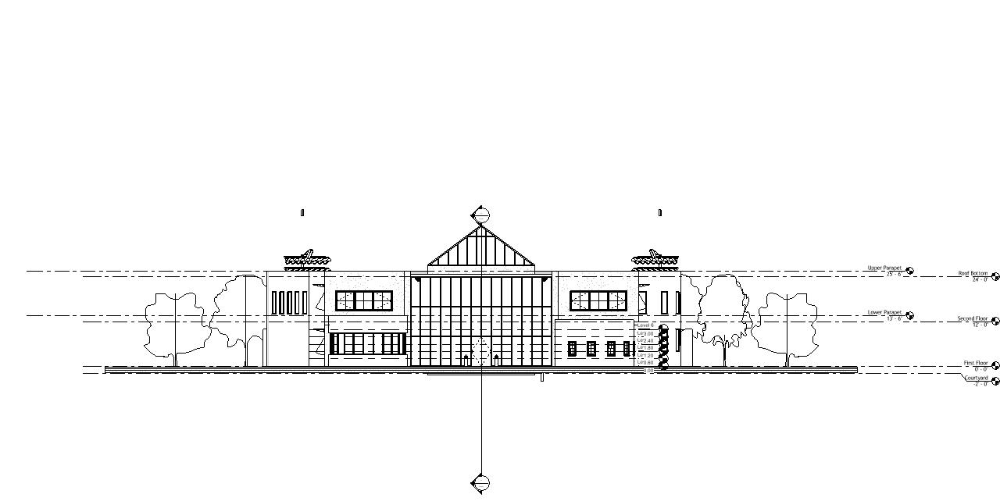
The school's entrance is a multistory glass curtain wall. The design continues upward in the triangular
glass roof that goes across the courtyard. To the left and right you can see the office and conference
room on the first floor. The second floor has two small open viewing areas that you can see through the
second floor windows.
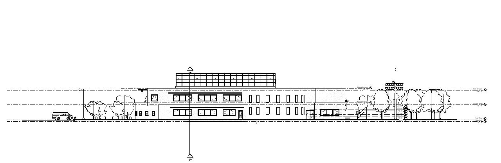
The roof of the school in the Revit model is triangular and extends only over the central courtyard. The windows are shaded with decorative wall elements which are reminiscent to the ones present in the cardboard mockup.
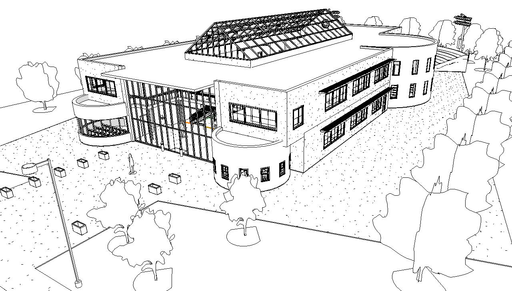
Finally, I decided that the best way to present my design to others would be through 3D renderings.
Architectural drawings are hard to quickly comprehend for laymen. With the power of modern architectural
software, creating rich renderings is easy. As a student, I also had access to unlimited cloud rendering
by Autodesk.
Click to see a video walkthrough of the 3D design
This walkthrough is fast-paced because I had to render each frame on my Windows laptop. One area
where Revit struggles is creating walkthroughs, since adding points afterwards is tedious and error-prone.
I used FFmpeg to join the frames together into a video.
Playing with different rendering options and angles was very interesting. I put in some furniture
and landscaping details to bring the building to life. The Autodesk built-in library has most important
building components. For some select items such as the fountain, I found them pretty easily online.
Many companies that sell construction-related products have free Revit families on their websites
which you can download.
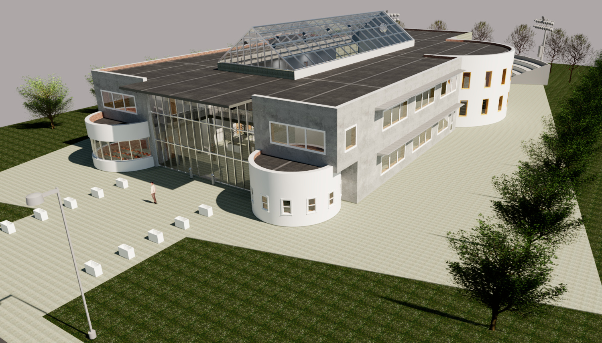
Apart from the sloped roof, the rest of the roofs are flat and surrounded by parapets. In reality,
the roof would be slightly tilted so that water would flow into drainage pipes when it rains. I did
not model this complexity, but it was fascinating to know that it exists and has to be taken care
of. Even a project as simple as a house requires tons of planning and the expertise from multiple
people working in conjunction.
The foyer is the central entrypoint for students, teachers, and guests. It opens up to the courtyard and hallways on either side, as well as the office and conference room.Click to open an interactive panorama view of the foyer
The foyer is meant to be welcoming and serve as a central connector to the rest of the school's
rooms. It may have a reception area, which can be set up in front of the main office entrance.
Whether a student goes to the right or to the left, they'll be able to take a staircase up to
the second floor. The two staircases intersect and allow for traffic to pass freely between
floors. The school also has an elevator, which can be found to the right of the theater
foyer (you can see it to the right of the fountain in the image above).
The office is a room dedicated for the purposes of school administration. It is round and connects to the entry foyer.
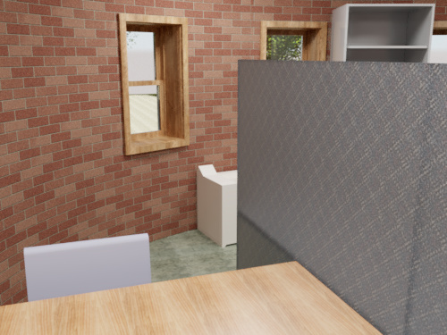
The office is where the principal and other school administrators may work. It is a round room
with windows looking out onto the parking lot and entrance.
The courtyard is the school's central gathering spot. It can be seen from both the first and second floor hallways.
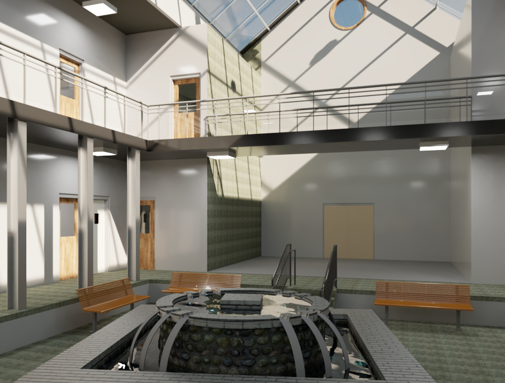
Click to open an interactive panorama view of the courtyard
The courtyard is a multifunctional area at the heart of the school. Above it is a glass roof through which
you can see the sky. The school's main halls go around the courtyard. The second floor hallway is identical
to the one on the first floor, which allows students to peer down onto the courtyard from above. The fountain,
benches, and trees create a park-like relaxing atmosphere. Behind the courtyard is a foyer area which provides
access to the theater.
The inner theater seats 162 people and has a large stage that can be used for performances and connects to two side rooms for actors.
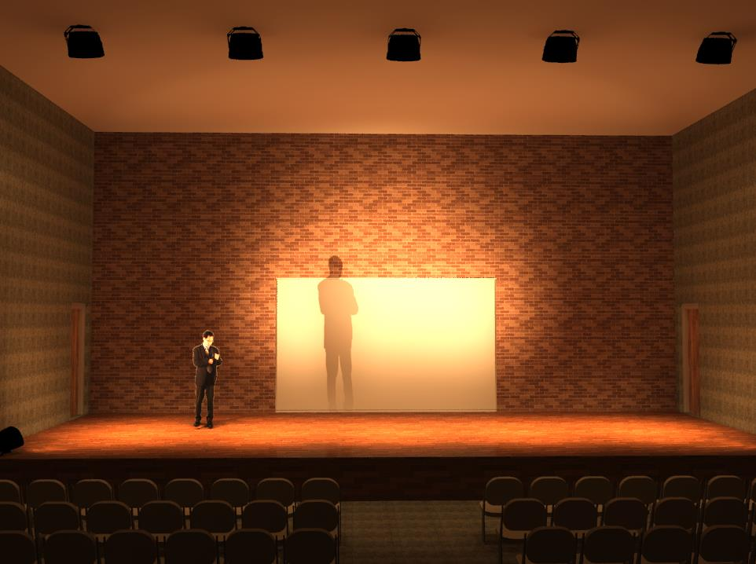
As a theater kid myself, I put a lot of importance on this part of the school. In fact, the school building has
two stages which sit back-to-back. The inner theater stage has a large white foldable door (which you can see
in the image above) which connects to the outer stage. This allows for performances to happen both inside and out
in fresh air. On the left and right are two actors' rooms that have exits onto the stage. While the stage in
the Revit design is plain, it could be extended to be a fully-featured theatrical stage if need be. For example,
a curtain could be hung near the back to allow actors to pass from one side to the other.
The exterior amphitheater is something that you won't find in many schools. Don't mind the creepy floating office lady – when I was putting in people, they all looked the same in the floor plan view, so I didn't even notice. I thought it would be funnier to just keep her there.
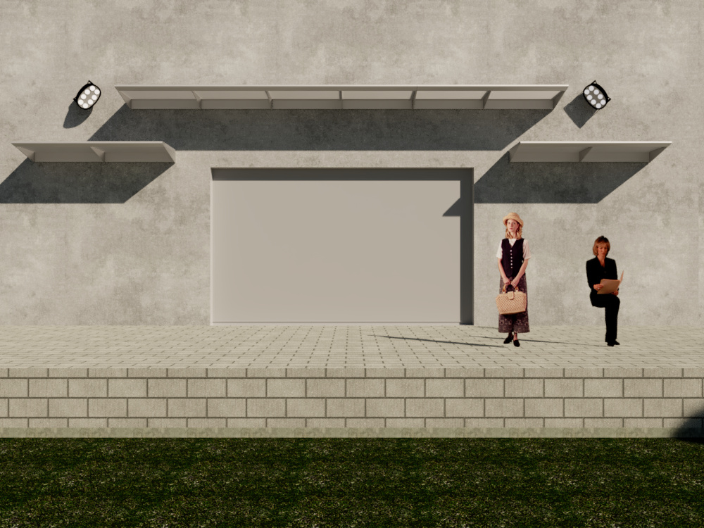
Click to open an interactive panorama view of the amphitheater
The door that you see in the middle of the amphitheater stage is the same one that's on the inner stage. The
two stages are identical in size. The Russian school has many events that are held in open air. The amphitheater
serves as another multipurpose facility that could accomplish this goal.
The library is large, round, and inviting.
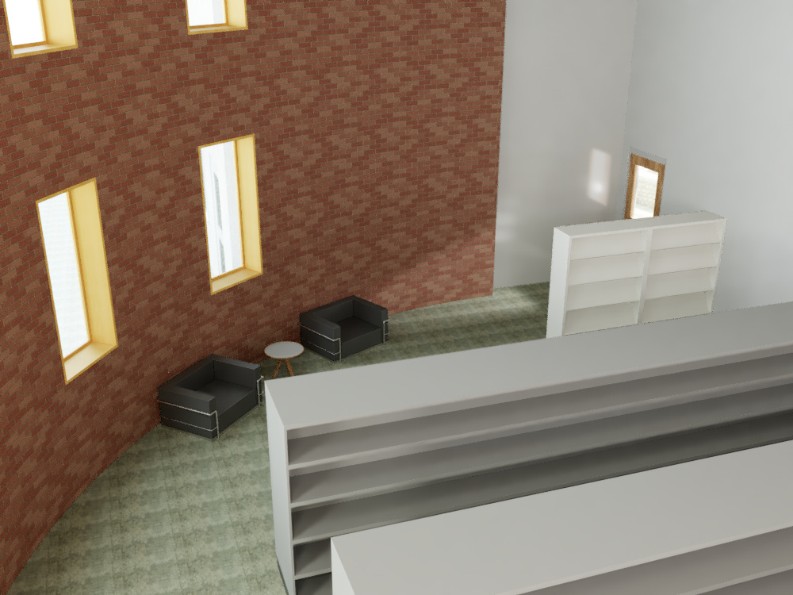
The library is a large two-story facility that has ample space for bookshelves and seating. Throughout
this project, I changed its shape multiple times. In the final Revit version, it is a single elegant
arc that has large windows to let in light. It is meant to look grand, modern, and simple. I envision
walking in and pulling out a work of Pushkin or Checkhov from the shelves before comfortably relaxing
and reading it the natural light that seeps in from the windows.
From the side, the school looks quite normal with classrooms and rectangular windows. Shades mess with the dynamics of light in interesting ways.
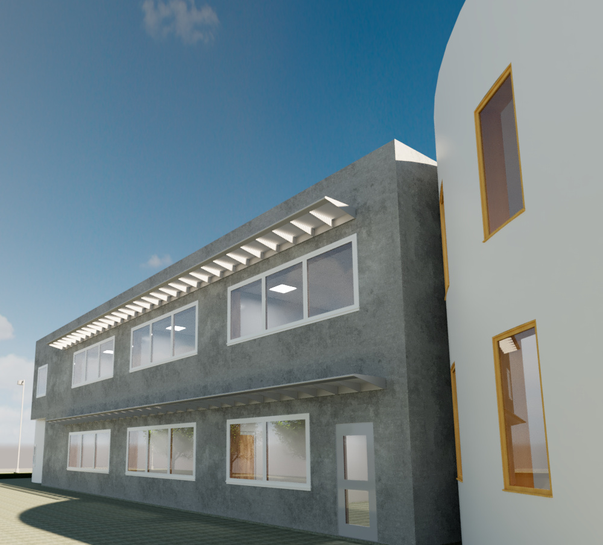
As I said before, the classrooms are meant to be standard for the sake of education. This part of the
building is relatively simple and rectangular. Sergei and I played with ornamental elements such as shades.
These provide protection from the sun, but also create interesting patterns of light that break up the building's
monotony.
Nothing to see here. Just an ordinary classroom, albeit with large windows.
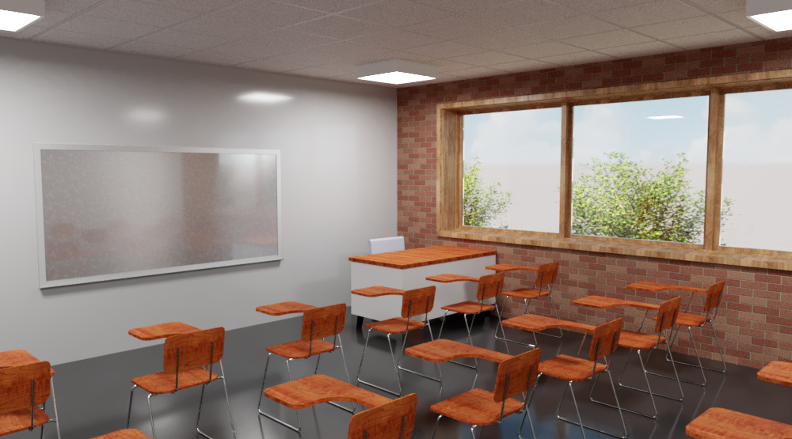
Classrooms are perfectly square and have matching rows of rectangular windows broken up into
squares. The shape of the room implies little of its function. This is mainly because the
Russian school has a very diverse set of activities, from math to sculpture. Classrooms can
be furnished and organized as needed. Two classrooms on the first floor have emergency exits
directly outside. This enhances safety by allowing students and staff quick escape in the event of
an emergency.
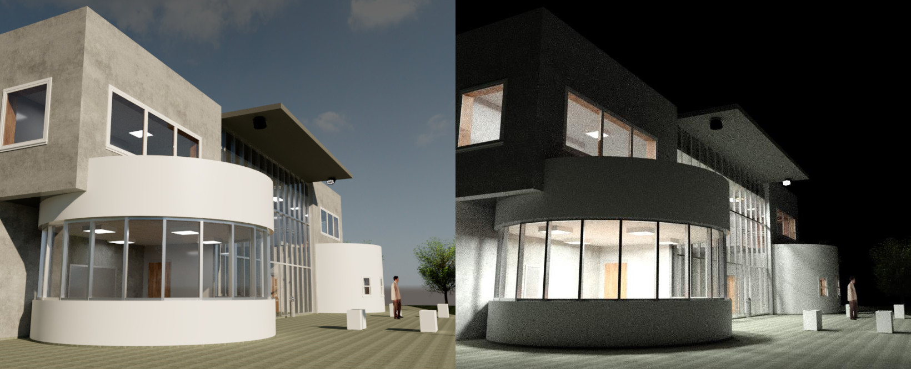
On a final note, I found lighting to be tedious, yet able to create very interesting results.
It took a lot of tweaking before day and night lighting both looked fine. In the image above
you can see various light fixtures that I attached. Panel lights, arena lights, and street lights
all helped make the building look more realistic during the day and night.
I really enjoyed working with Revit to make my vision a reality. I have many complaints about
the software, but overall the experience was smooth and I made a lot of progress in the past
two months. I went from not knowing anything about the program to being proficient in basic
tasks (enough to build the result you see now) in a couple of weeks. It's really cool that Autodesk
lets students access their super expensive stuff for free. I talked to an architect who told me
that even her work Autodesk account had limits on what she could build, whereas students get no
limits whatsoever. If you're interested in architectural design, I recommend checking all of
these programs out.
Conclusion
This June marks a bittersweet end to my Russian school project. Who knows? Perhaps, I will live
to see the day that this is built. I learned many narrow and broad things about architecture, art,
technology, and handcraft. A vital thing that I've learned is that it's important to have a
grasp on what it means for a building to exist in reality. The complexity of modern-day constructions
is impressive, but it all starts with a paper and pencil. Yes, you can jump straight into 3D programs,
but you won't have the spacial awareness that you get by drawing and building physical models. Doing
a project in stages allows you to move on from less to more complex, while experimenting and making
changes along the way. This process is extremely valuable and allows you to intentionally make
each single decision about the final result.
As Sergei taught me, an architect's job is to create a spacial environment in which social and functional
processes take place. In my case, that was a school. I would say that I successfully accomplished this mission.
Right now, it's simply some papers, a mockup, a set of 1s and 0s on a computer. Yet this "paper architecture"
is the essence of what it means to be an architect. It is a vision from which stems an actual construction.
It all starts with a thought that evolves into something greater. Ultimately, the tangible building is
the application of this powerful idea in reality.
Credits
Thanks for stopping by and learning about my project. I would like to thank Sergei Yudin, who
patiently and wisely guided me through my architectural journey. Without him, none of this would
be possible. He brought reason and truth to my learning process, and his teaching is what made
me capable of picking up a pencil and conjuring up a building in the first place.
Additionally, I would like to thank Nelly Bogner. She was the person who informed me that
Revit is a thing that's accessible to me, and she helped me understand how to handle the
unwieldy program. Her passion for architecture inspires me to continue creating.
Finally, I am indebted to the Russian Speaking School of Austin for making the paper
architecture class possible. I have come a long way thanks to the sage advice of many
in that institution.